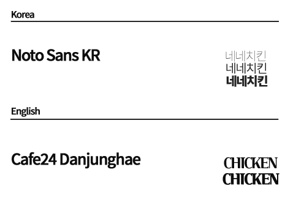

01 / Overview
네네치킨’은 1995년 계육 가공업체로 출발하여 현재는 대한민국을 대표하는
치킨 브랜드로 자리잡고 있습니다. 남녀노소 누구나 즐길 수 있는 바른 식품을 판매한다는
브랜드의 가치관을 사이트에 녹여내고, 네네치킨만의 귀엽고 친근한 이미지를 키워드로 삼아
가독성과 접근성이 좋은 리디자인 사이트를 제작하였습니다.
03 / Color & Font
제품과 브랜드의 친근함과 바른가치관,
귀여운 이미지를 나타내기위해 노란색을 포인트 컬러로
선택하였고, 기본 베이스 컬러는 화이트와 블랙, 연노란색입니다.
#ffae00
#ffffff
#212121
#feffc4
한글 폰트는 높은 가독성과 정돈된 느낌을 주는 Noto Sans KR를
사용하였으며 영문폰트는 Cafe24 Danjunghae를 사용하였습니다.
